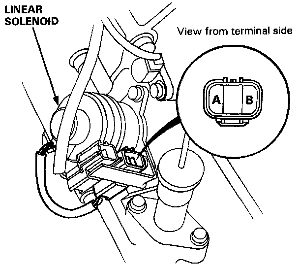

Throttle Valve Solenoid: Testing and Inspection

LINEAR SOLENOID
1. Remove the linear solenoid connector.
2. Measure the resistance between the A and B terminal.
Resistance: 5.0-5.5 ohms (at 70°F, 20°C)
3. Replace the linear solenoid if resistance is out of specification.
4. Connect the B terminal of the linear solenoid connector to the battery positive terminal and the A terminal to the battery negative terminal. A clicking sound should be heard.
5. If not, replace the linear solenoid.